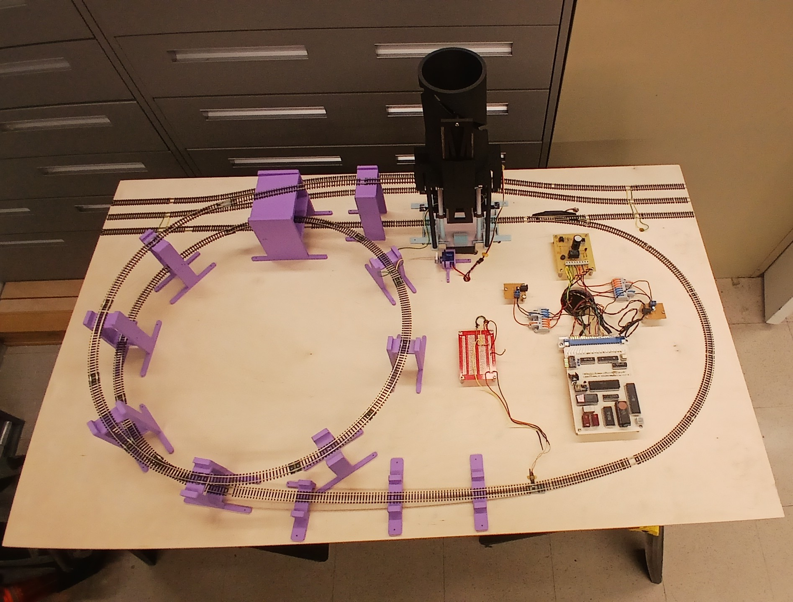
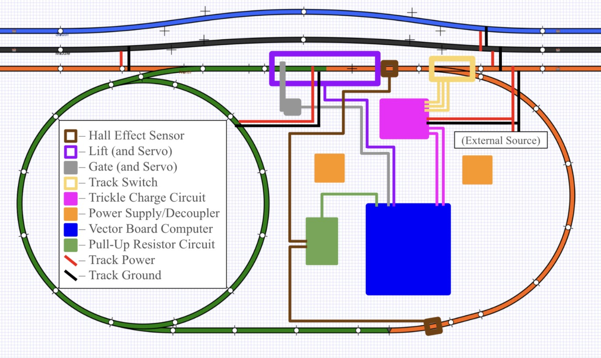
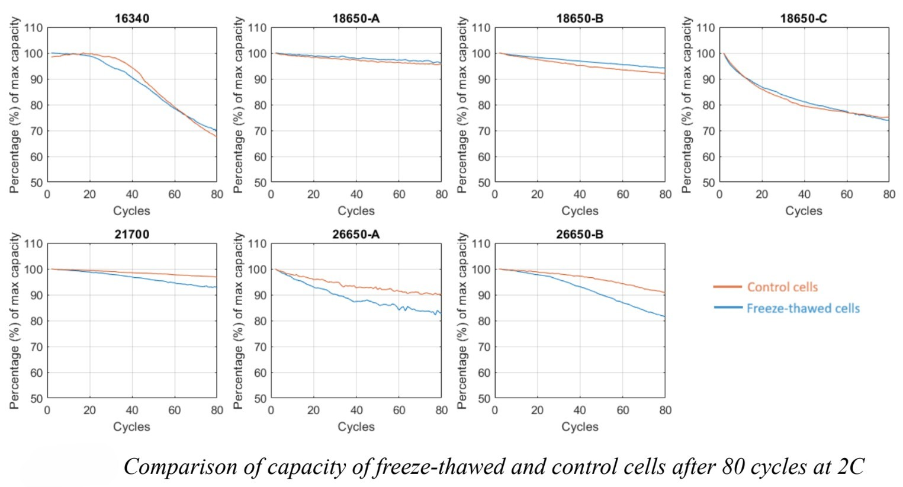
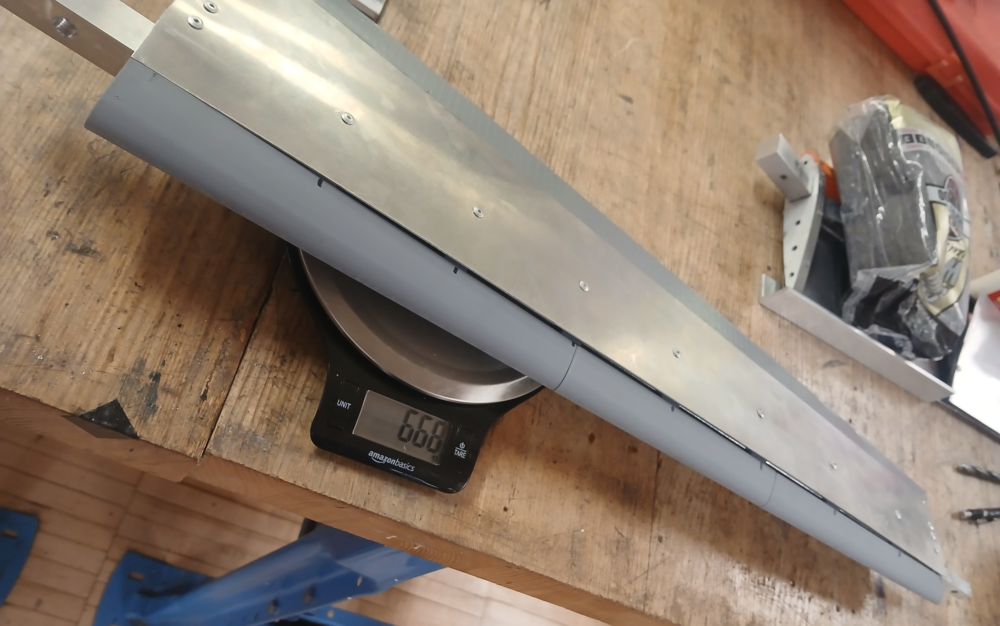
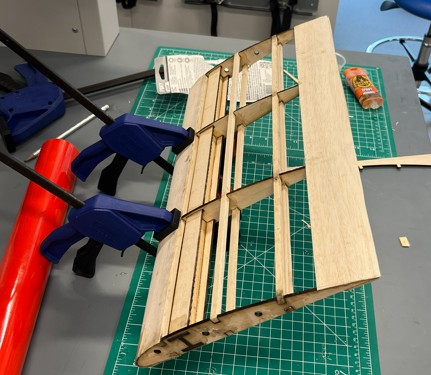
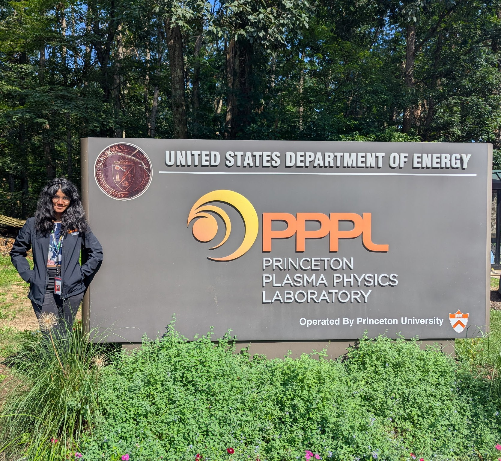
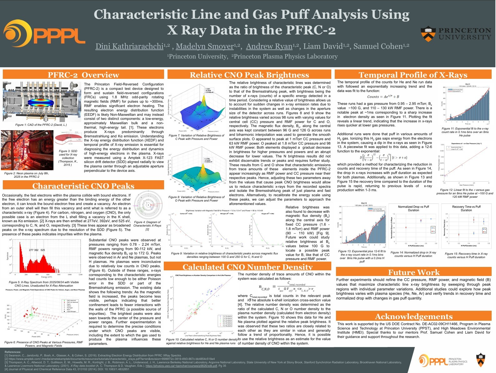
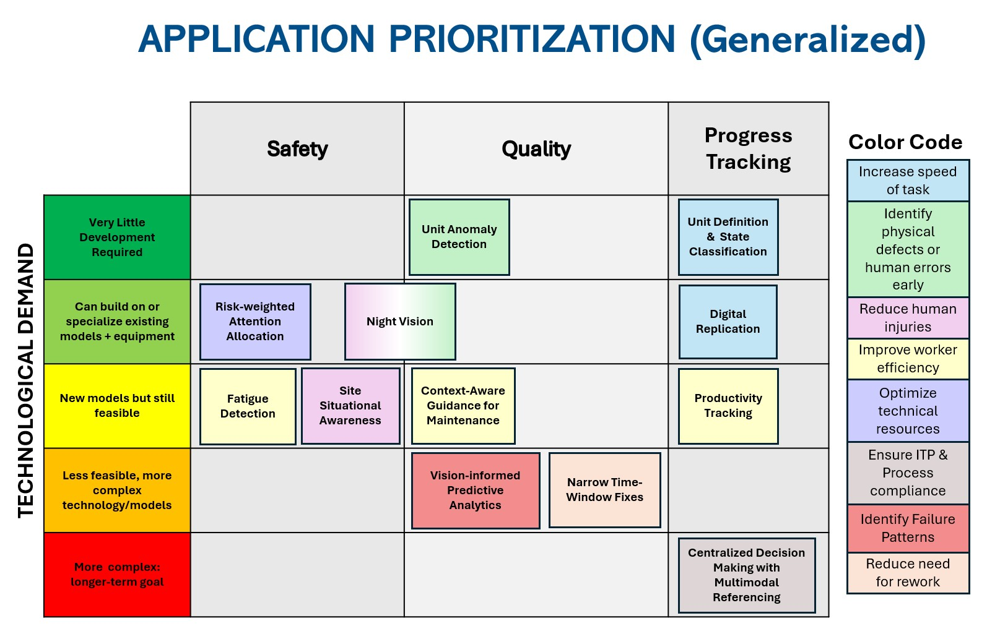
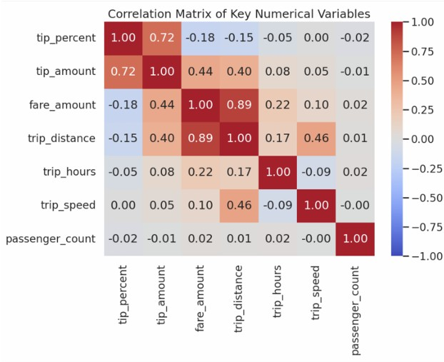
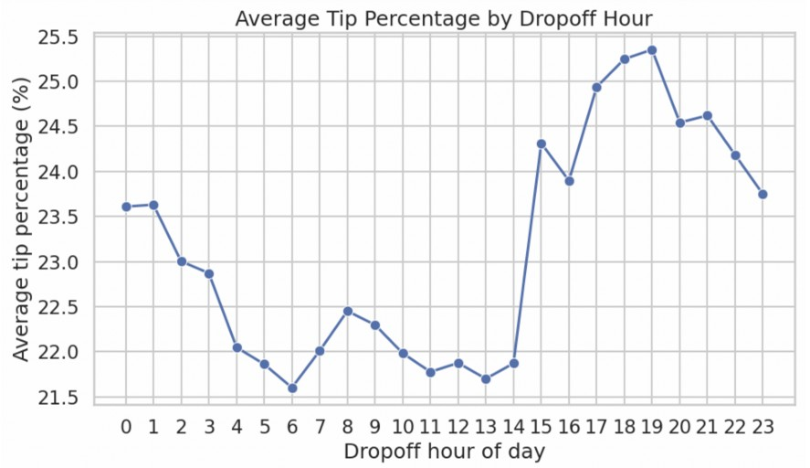

B.S.E. Mechanical & Aerospace Engineering — Princeton University '27
Minors in Computer Science + Robotics + Energy
Working at the intersection of mechanical design and intelligent control — building the structure, then making it think.
I am passionate about working at the intersection of hardware and software to build new technology that push the bounds of what we thought we'd ever see during this lifetime.
NameDini N Kathriarachchi
FocusMechanical Engineering, Robotics, Energy, Research
StatusExp. Grad. Jun 2027
GPA3.7 / 4.0
01
About
I am a Mechanical and Aerospace Engineering student with minors in Computer Science, Robotics & Sustainable Energy. My experience spans energy research, robotics & autonomous systems, microprocessors, aerospace structural design, and computer vision & physical AI.
I'm currently an AI Integration Intern on the Robotics & AI team at Larsen & Toubro Limited - Divisional Corporate, as part of L&T's 2026 Global Internship Program, developing computer vision adoption strategies and deployment architectures for ~100 construction & manufacturing project sites — mapping physical AI assets, evaluating edge inference hardware, assessing build-vs-buy-vs-partner tradeoffs, researching model providers, and quantifying impact.
ProgrammingJava, Python, MATLAB (+Simulink), HTML
CAD / FEA / CAMPTC Creo, OnShape, Ansys
ManufacturingCNC, SLS, 3D Printing
Machine LearningTensorFlow, Scikit-learn
Other ToolsLaTeX, QGIS, Ardupilot
LanguageEnglish (Proficiency), Sinhala (Limited Proficiency), German (Elementary)
Microprocessors Course · 3-Person Team · Feb – May 2026


Designed end-to-end system integration and debugging across mechanical, electrical, and software subsystems, diagnosing faults and iterating to deliver a fully functional autonomous demo.
Engineered a 12-support spiral track system carrying a model train through a 510° helical descent at a 2.4° incline, using Onshape to design structurally distinct supports with interlocking joints and slanted mounts.
Built a custom embedded controller around a 6502-based motherboard and Arduino processor, including a GAL address-decoding chip, Hall Effect sensors, and a trickle-charge circuit bridging 24V track signals to 5V logic.
RESULT — Fully autonomous run cycle integrating mechanical, electrical, and software subsystems
Heat Transfer Course · Constructed from Scratch · Nov – Dec 2025
Constructed a 2D streamfunction-vorticity finite-difference CFD solver in MATLAB to simulate low-Reynolds-number convective flow and heat transfer around three wing planforms: rectangular, elliptical, and tapered.
Validated simulation accuracy against peer-reviewed literature, achieving Strouhal and Nusselt numbers within small margins of published benchmarks.
Applied the validated model to compare vortex-shedding and convective heat-loss behavior across planform geometries.
RESULT — Solver validated within small margins of published fluid flow & heat transfer benchmark data
Li-ion Battery Behavior Under Extreme Thermal Cycling
Materials for Energy & Climate Lab · Independent Researcher · Jan – April 2026

Designed and executed an experimental study on freeze-thaw degradation of 7 cylindrical Li-ion cell types (16340–26650 form factors) for Mars rover/lander applications, replicating the Martian diurnal temperature cycle (-75°C to -4°C) using a cryogenic chamber and custom-built thermal profile derived from NASA Curiosity rover GTS data.
Characterized capacity and internal resistance behavior across a 20°C to -40°C range via CC-CV charge-discharge and pulse-power testing, identifying -25°C as the electrolyte freezing threshold and quantifying a roughly linear resistance growth from 20 to 70 mΩ prior to a steep post-freeze increase.
Subjected cells to 14 consecutive freeze-thaw cycles followed by 80 charge-discharge cycles at 2C, demonstrating that larger form factor cells (21700, 26650) experienced measurably greater capacity loss (up to ~8% divergence vs. control) than smaller cells (18650, 16340), confirming a form factor–degradation correlation driven by internal heating and thermal gradients.
Delivered actionable design insight for space-grade battery systems, showing that minimizing cell form factor can improve longevity under extreme thermal cycling, informing power storage optimization strategies for future Mars surface missions.
RESULT — Esyablished vital design implications for Mars rover & lander power system considerations
[1] Sophomore Mechanical Design Course · Group Lead, Team of 8 · Mar – May 2025
[2] Aerospace Structures Course · Team of 4 · Mar – May 2026


Project 1: Led a team of 8 to design, construct, and test an airfoil withstanding 2,200 lbf-in of torque with minimal deflection at 19 oz.
Project 2: Worked with team of 4 to design, construct and test a semi-span wing for a small VOTL aircraft of span 0.95 m and mass 3 oz; ran extensive, iterative & precise calculations to determine wing dimensions, lift coefficients, angle of attack, rib spacing, stress & shear distributions and many other physical characteristics to design as efficient a wing as possible.
Designed components in PTC Creo & OnShape, generated engineering drawings with justified specifications and tolerances, and ran FEA (Creo & Ansys) structural simulations to optimize the design.
Manufactured components using CNC, SLS, water jet cutting, 3D printing & laser cutting; coordinated task distribution and communication with instructional staff.
RESULT — Airfoils met torque, weight and deflection targets under structural loading and wind-tunnel tests
Research Intern - Princeton Plasma Physics Laboratory · Jun – Oct 2025


Assisted mentor to run nuclear fusion protype machine PFRC-2, and analyze data from oscilloscopes, gauges & sensors
Project 1 (Group): Contributed to development of electron distribution model (EEDF) for studying PFRC-2 plasma behavior by analyzing x-ray diagnostics data to identify parameters minimizing characteristic lines in emission spectra
Project 2 (Individual): Constructed algorithm to automate the characterization of Field Reversed Configuration (FRC) plasma instabilities within PFRC-2 when captured as high-speed camera footage
Analyzed data using MATLAB & Python, compiled weekly presentations and produced detailed final technical reports
RESULT — Synthesized findings into two complete research papers related to characterization of plasma behavior
Worked on multiple club projects/teams, integrating mechanical and electrical subsystems.
Hoverloon Project — Technical Lead
Designing a helium-electric hybrid drone prototype for cost- and energy-efficient load carrying, working with structural frames, motors, & landing gear with power distribution boards, electronic speed controllers & batteries to modify and integrate existing drone designs with airship structures
Wall-E Project — Mechanical Team
Contributed to preliminary structural & mechanical design of treads and transport mechanisms of robot capable of compact self-storage and automated trash collection, inspired by the 2008 Disney movie character
PacBot Project — Hardware Team
Analyzed shortcomings of prior models to develop an enhanced small-scale autonomous robot for fast, effective maze navigation; integrated PCBs, wiring, and sensors into the mechanical design; received 2nd place at the inter-university PacBot tournament
Club Social Chair
Organizing, securing funding for, setting up & running all social and outreach events of the club for the broader Princeton community (Two each semester)
07
Computer Vision Strategy for Company-Wide Physical AI Adoption
AI Integration Intern — Larsen & Toubro Limited (Corporate Center) · Jun 2026 – Present

Conceived 12 high-value computer vision use cases across project sites spanning safety, quality, and progress tracking.
Developing a strategy and roadmap to expand CV adoption — mapping existing physical AI assets, evaluating CV platforms, open-source frameworks, and edge inference hardware.
Assessing build-vs-buy-vs-partner frameworks and deployment architecture across 100+ construction sites.
RESULT — Use case and deployment framework informing active internal strategy
Unable to share full case study due to confidentiality agreement.
08
NYC Taxi Tip Prediction Model
Data Science & Machine Learning Course · Dec 2025


Built an end-to-end ML pipeline on 3.5M+ NYC TLC taxi trip records (Jan 2025 data), engineering features like trip duration, speed, and dropoff-hour encodings, and applying systematic outlier filtering (IQR-based) to produce a clean 2.3M-trip dataset for predictive modeling.
Designed and trained custom neural networks in TensorFlow alongside 7 classical ML models (logistic regression, Naive Bayes, SVM, LASSO/Ridge/Elastic Net, gradient boosting) for classification and regression tasks — implementing multi-layer dense architectures with batch normalization and dropout to reduce overfitting, achieving 96.4% classification accuracy (AUC 0.93) and 6.24% MAE on tip prediction, competitive with the best tree-based ensemble.
Delivered actionable insights on tipping behavior through correlation analysis and visualization, identifying that trip-level features (distance, speed, fare) have only weak linear relationships with tip percentage — motivating the use of non-linear models like gradient boosting and neural networks over traditional linear approaches
RESULT — Built a successful ML model for predicting NYC taxi tips